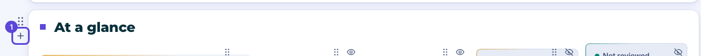
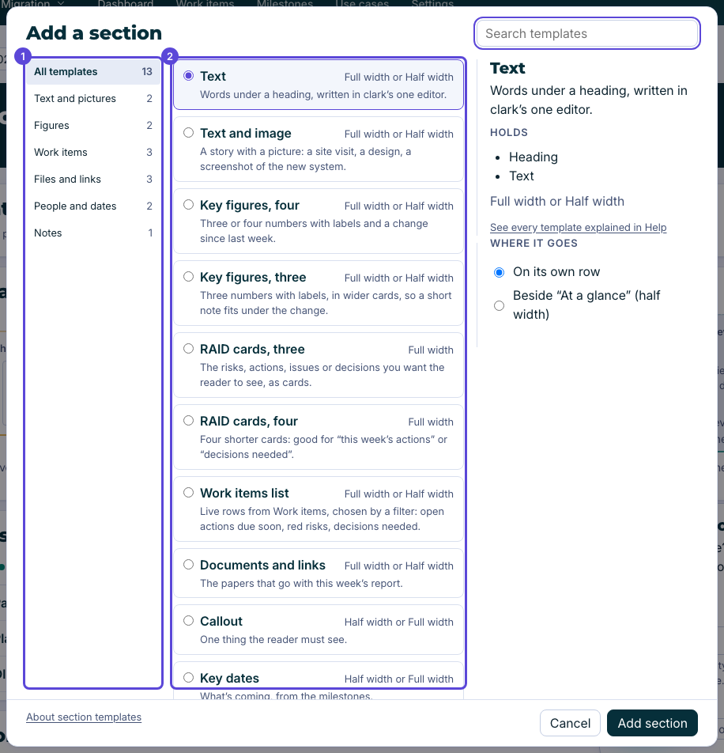
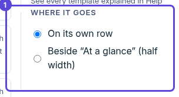
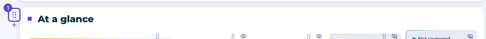
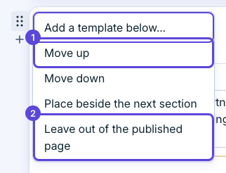
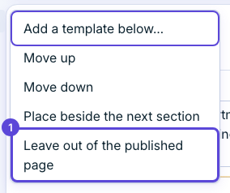
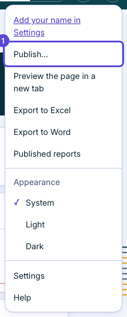
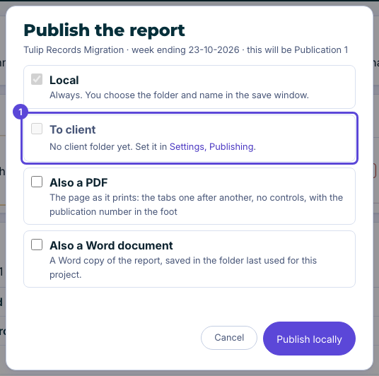

Keep one project record. Shape the weekly report from it. Publish it.
clark is a report editor for programme managers. It keeps a project's actions, risks, issues, decisions, milestones and use cases in one place on your own computer, with a history and Undo.
Contents: What you need, page 1 · Install and first start, page 1 · Look around with made-up data, page 2 · Your first five things, page 3 · Where your data lives, page 7 · If something goes wrong, page 7
1What you need
A Mac. clark 1.0.0 runs on a Mac. Windows and Linux downloads come later.
Google Chrome.
Python 3.9 or newer. Your Mac may already have it. The check in the next part tells you.
Docker is optional. It is for a Mac that will not open clark.command, or if you already use Docker.
Everything stays on your own computer. Nothing leaves your computer unless you publish a report.
2Install and first start
Open this repository’s Releases page and download the latest clark-…-mac.zip. Unzip it.
To check your Mac is ready, open Terminal in the unzipped folder and type python3 -m clark.doctor. It tells you what to fix, if anything, and where to get it.
python3 -m clark.doctor
Open clark
Without Docker:
Double-click clark.command in this folder.
The first time, your Mac may say it could not verify clark.command and offer only Move to Trash and Done. This is expected, not a fault. Do not choose Move to Trash: choose Done. Then open System Settings, choose Privacy & Security, scroll down and choose Open Anyway beside clark.command, then double-click it again. On a computer your employer manages, Open Anyway may ask for an administrator's password, and your employer may not allow it. If you cannot get past it, use the typed way below, which needs no password.
A Terminal window starts clark, then its window opens in Chrome (or in your usual browser if Chrome isn't there).
After a while with no window open, clark stops by itself. To use it again, double-click the file again.
Double-clicking while clark is open just opens another window.
The typed way: open Terminal, type cd and a space, drag this folder into the Terminal window and press Return. Then type:
bash clark.command
and press Return. Use this too if double-clicking does nothing.
Or use Docker
If your Mac will not open clark.command (a work Mac often will not), or you already use Docker, use Docker instead. You only need Docker and Chrome.
Open Docker Desktop and wait until it says it is running.
Open Terminal, type cd and a space, drag this folder into the Terminal window and press Return.
Type this and press Return (the first time it takes a few minutes):
docker compose -f docker/compose.yaml up -d
Open Chrome and go to http://localhost:8766
To stop clark, type this in the same folder and press Return:
docker compose -f docker/compose.yaml down
Use the clark download, not a copy of the source code: a copy of the source has no built page, and Docker stops with a message saying so. Start Docker from the clark folder.
3Look around with made-up data
To try it with made-up data first, open Terminal, type cd and a space, drag this folder into the Terminal window and press Return. Then type:
python3 -m clark --demo --open
and press Return. Nothing you do there is kept.
4Your first five things
These five jobs cover a first week with clark. The steps are the same as the ones in clark’s own Help, which you can open at any time.
Add a work item
Put a new task on the plan and say who owns it.
On Work items, press the + at the top right. Point at it and it shows what it adds, following the type switch: Add action, Add decision, Add risk or issue (a menu of Risk and Issue) and, on All, Add item (a menu of Action, Risk, Issue and Decision). You can do this in View as well as in Edit.
The new item is made at once and opens in the peek with its title selected: type over it. A message at the foot of the page says it was added, with Undo.
Its due date (a week from today; a decision’s needed-by date is today), and an action’s priority, are placeholders. Change them in the list or in the peek.
A new item is shown to the client to start with. While one still has its placeholder title, the Publish box warns you. Rename it, or turn off its eye, before you publish.
In Edit on the Dashboard, the last row of each list adds one too: type “Owner: what it is” (the owner, a colon, then what it is) and press Enter.
Write this week’s report
Fill in the status, the highlights and the next steps.
Open the Dashboard and press Edit at the top. Each change saves on its own.
Set Week ending to the Friday the report covers: type it as DD-MM-YYYY, or press Enter in the empty box to use the Friday shown. Any other day is not accepted.
Click the text under Current state and write where the project stands. It turns into an editor where it is: there is no Save button. Click away or press Cmd+Enter to keep it; Esc puts the old text back. Write the Summary, This week and Next week sections the same way.
Set the health on the Project health tile: see Set the project health in Help.
Check the lists of risks and issues, open actions and decisions. Click any part of a row (the state, the title, the owner, the date) to change it there; the ID opens the whole item in the peek.
Press View to read the report as the client will.
Add a section from a template
Start a new section from a layout, in the place you choose.
On the Dashboard, press Edit. Each section now has a control at the left of its card: a move button and, under it, a +.
Point at the section you want the new one to follow and press its +. Or click the move button to open the section’s menu and choose Add a template below….

The Add a section box opens with the cursor in Search templates. On the left, pick a kind: All templates, Text and pictures, Figures, Work items, Files and links, People and dates or Notes. Or type a word to find a template by name.

Choose a template in the list, such as Key figures, four or Callout. Up and Down move through them. The box on the right says what the chosen one is for and what it Holds.
Under Where it goes, choose On its own row, or Beside the section above, which gives each of the two half the width. Beside is greyed out, with the reason under it, when the template cannot be half width or the section above is not on a row of its own.

Press Add section, or press Enter. Press Cancel, or Esc, to close the box and add nothing.
The new section sits below the one you chose, with its heading ready to rename. It starts empty, and an empty section is left out of what the client sees until you fill it. One Undo takes it away again.
Move, hide and delete sections
Change the order of the report, put two sections side by side, or take parts out.
On the Dashboard, press Edit. Each section has a move button at the left of its card (in the margin on a wide window, inside the card on a narrow one). It is faint until you point at the section or tab to it.

To move a section, drag its move button and drop it. A line between two rows puts it on a row of its own. The cover stays at the top. Without a mouse, focus the button and press Alt+Up or Alt+Down.
Click the move button, or press Enter or Space on it, to open the section’s menu.

To move one step, choose Move up or Move down. A choice that cannot be used is greyed out, with the reason under it.
To put a section beside another, choose Place beside the next section. Each takes half the width, and a row never holds more than two. For a section already in a pair the menu says Full width instead; choose it to give the section a row of its own.
To keep a section out of the client’s copy, choose Leave out of the published page. It stays in Edit, greyed, with a small eye mark under its + and the tag Left out of the published page. Choose Include in the published page to bring it back.

A text section, and the Needs from you section, also have Delete section in the menu. It removes the section from the report.
Edit shows the sections in their new order, and the published page follows it. A section you left out is greyed in Edit and gone from View and from the published page. Undo puts back a move, a section left out or a section removed.
Publish to the client
Check the report, then save the finished copy locally and, if you choose, send it to the client.
To look first, press your profile circle and choose Preview the page in a new tab. It shows what the client will see, and nothing is saved.
Press your profile circle and choose Publish…. The box Publish the report opens. The line under its title gives the project, the week ending, the number this publication will have, such as this will be Publication 4, and when and where the last one went.

Local is always ticked, and the box says you choose the folder and name in the save window. Tick To client to copy it to the client folder as well. With no client folder set, that tick is off and a link takes you to Settings, Publishing to set one.

If you want them, tick Also a PDF (your browser’s print box opens and you choose Save as PDF) and Also a Word document (a Word copy of the report, saved in the folder last used for this project).
With To client ticked, a line says the client will see the page, and the Word report if you ticked it, and only what is shown in View mode. A hidden section or a work item with its eye turned off is not included.
If a work item the client would see still has its placeholder title, such as New action, the box warns you with a count. It does not stop you. To fix it, press Cancel, rename the item or turn off its eye, and open Publish… again.
Press the button at the foot, which reads Publish locally, or Publish and send to the client when To client is ticked. A spinner shows while it works. If the file name is taken, the box asks what to do: Add a number, Rename it or, where it is allowed, Overwrite the existing file.
The button turns green and reads Published, with the publication number in brackets, such as Publication 4. Press it to close the box.
The button shows a green tick and Published with its publication number. The saved page is the one the client sees, and the next publication gets the next number.
5Where your data lives
Your data stays on your computer, in ~/Library/Application Support/clark/. That folder holds your database (clark.db), clark’s safety copies (in a backups folder beside it) and a log file.
Keep it out of OneDrive, Dropbox and any other synced folder. They can damage a database that is open.
Safety copies are made before every Undo, before every Excel import and once a day. The newest 14 of each kind are kept. Settings › Backups lists them and puts one back.
6If something goes wrong
Open an issue on this repository and say what you did, what you expected and what you saw. If clark says it did not start, it names a log file (server.log in the data folder): please attach it. Do not attach your database or any real client information.
If clark will not start, close it and type python3 -m clark restore in Terminal to see your safety copies.
python3 -m clark restore
If it says nothing was started because clark is already open in another Terminal window, or another program is using the connection it needs, close that Terminal window or program, then double-click clark.command again.
If it says port 8766 is already used, another clark is open: close it, or stop it with the command in step 5 of the Docker steps, then try again. If it says it cannot connect to Docker, Docker Desktop is not running yet.
Made a mistake? Every change saves on its own, and the message at the foot of the page offers Undo.